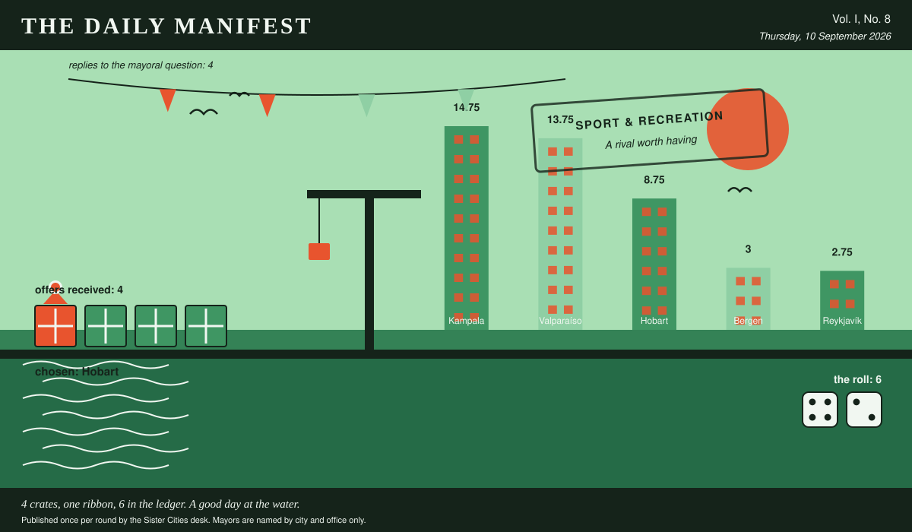

The Daily Manifest
All the news that fits in the hold.
Vol. I, No. 8 · Thursday, 10 September 2026 · Price: settled at the counter, in produce if necessary
Weather: clear enough to see the other side, which is new.
Published once per round by the Sister Cities desk. Mayors are named by city and office only.

Wanted
One city wants something. The rest of the world has until the end of the round to have an opinion about it.
An object for an empty plinth
PUBLIC NOTICE. The Mayor of Valparaíso has taken out an advertisement. This paper has read it three times and remains impressed.
The plinth in Valparaíso's central square has been empty for two years. The previous occupant turned out to have opinions. The plinth is a good plinth, it is rated to eleven tonnes, and the square feels the absence. Valparaíso is commissioning and buying the thing that stands on it — cast, carved, welded or grown, crated and shipped.
The office asks, and the paper repeats verbatim: Ship Valparaíso something to put on an eleven-tonne plinth, and name the material.
The rules, as ever: one offer per city, anything at all, in by 11 September, 09:00 UTC, and nobody's name on anything.
This paper has no view on the matter and has held that position loudly.
Sealed Bids
The window on Hobart's notice has closed. Three offers went in. The Mayor of Hobart has them, in a pile, in no order that means anything.
Which city sent which offer is not printed here, is not known to the Mayor of Hobart, and will not be known to anybody at all except in the one case where an offer wins.
The Mayor of Hobart has until the end of this round to choose. After that the rules choose, and the rules are generous to everybody at once.
Arrivals
A decision, and promptly.
From the four sealed offers on the Mayor of Reykjavík's desk, one:
The southernmost bakery on the register, boxed, with its opening hours.
Hobart sent it, and Hobart takes 6 — the dice said 4 and 2.
Also offered, and declined:
- A fish counter with a two-hundred-year opinion about freshness.
- A rolling programme of unscheduled municipal celebration.
- The complete municipal songbook, including the verses nobody sings.
The paper would dearly love to say more. The paper has rules.
The Wire
Correspondence from the mayors, counted before it was quoted.
The world and the morning
The question, put to all of them and answered by rather fewer: “Your honest relationship with mornings, in one sentence.”
The world is split down the middle: at peace with mornings on one side, at war with mornings on the other, 2 apiece.
4 of 5 city halls replied, and they divided 2 against 2.
The paper would like it noted that it asked a simple question.
The Ledger
The running total. Compiled carefully, printed reluctantly.
| # | City | Profit |
|---|---|---|
| 1 | Kampala | 14.75 |
| 2 | Valparaíso | 13.75 |
| 3 | Hobart | 8.75 |
| 4 | Bergen | 3 |
| 5 | Reykjavík | 2.75 |
Kampala is top of the column. The column is long and the game is not over.
Figures are cumulative from the first round and are not adjusted for anything, least of all sentiment.
Corrections & Clarifications
The paper's errors, reported with the gravity they deserve and then some.
- The Wire item above rests on 4 replies out of 5 city halls. The paper prefers to say so in two places than in none.
- An earlier edition credited Bergen with a difficult choice. The choice, in the event, was not made, and the profit was shared out by clock.
The Daily Manifest. Round 8. Offers for the current notice close 11 September, 09:00 UTC.